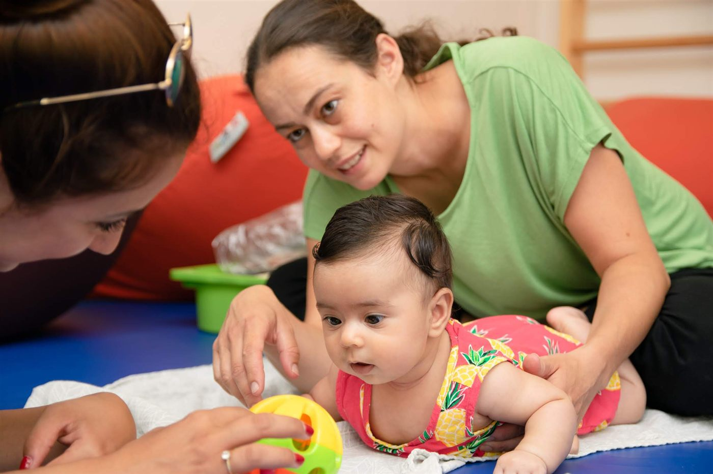
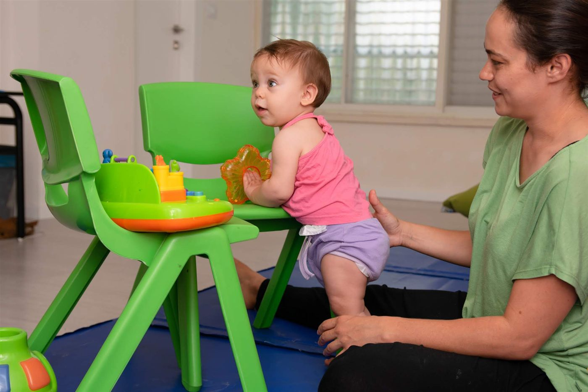
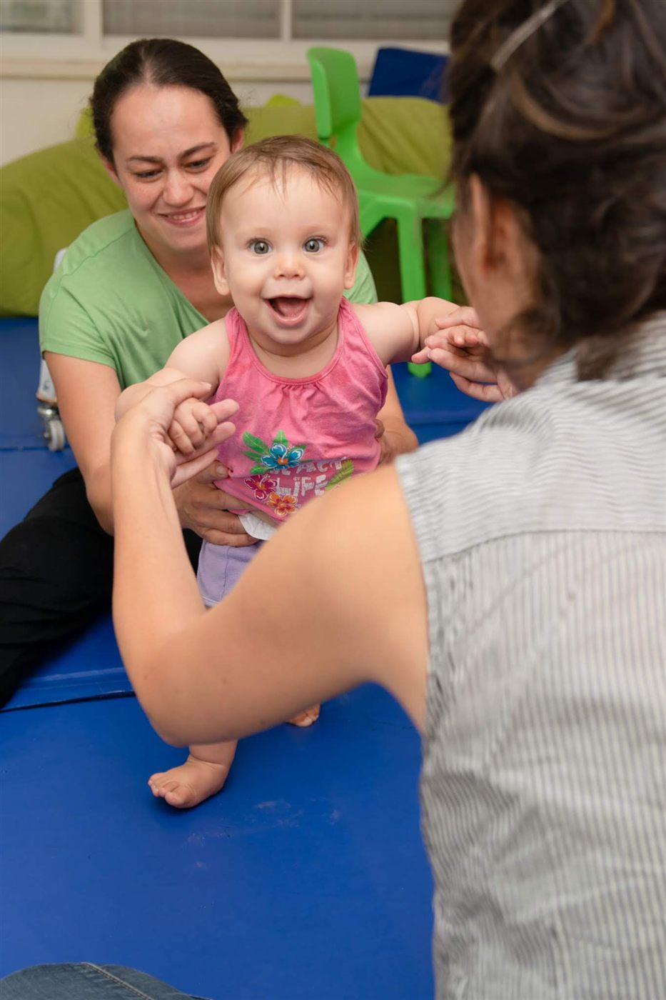
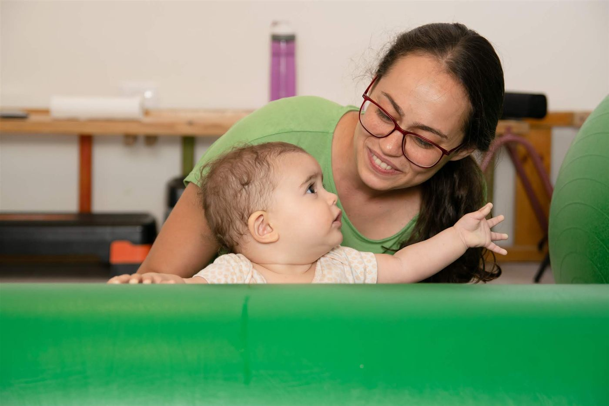
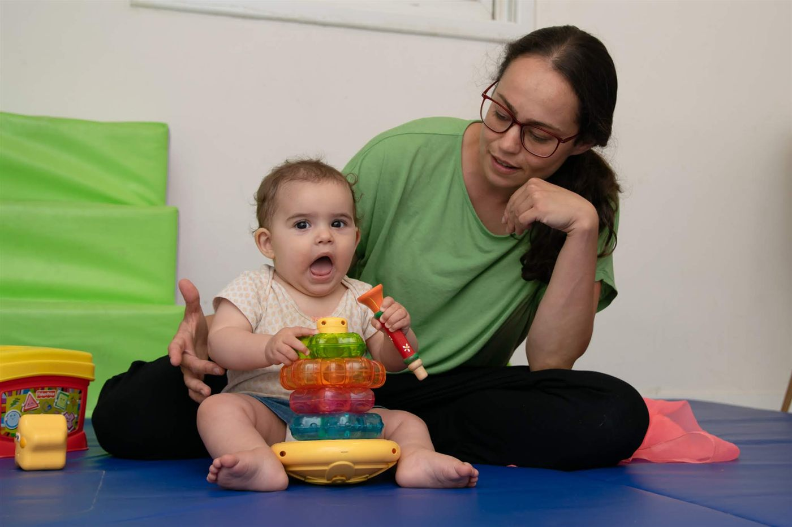
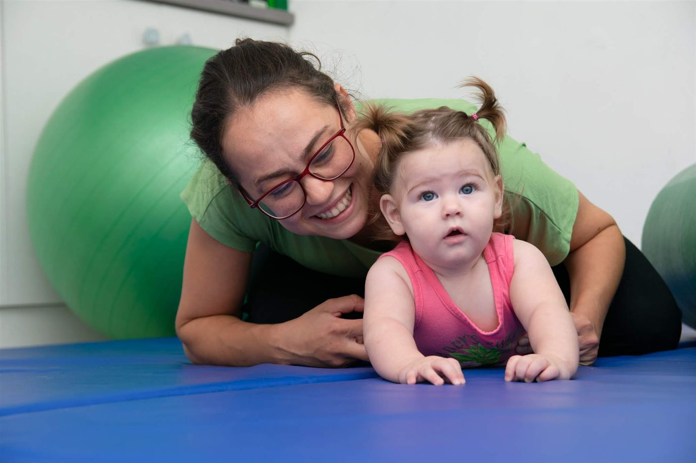

נעים להכיר :)
אני אלה רוזנטל, פיזיותרפיסטית נוירו-התפתחותית עם 15 שנות ניסיון, מומחית בהתפתחות התינוק, בשיקום ילדים ובטיפול ברצפת אגן ילדים, עם גישה הוליסטית של גוף ונפש.
הסיפור שלי
מאז שסיימתי את לימודי הפיזיותרפיה ב-2011 עבדתי במכון להתפתחות הילד, במעון שיקומי, בגן שיקומי ובמרפאה להפרעות תנועה בילדים. במקביל, מזה 10 שנים, אני מטפלת בקליניקה הפרטית שלי ברחובות.
עם השנים הבנתי שאי אפשר להפריד גוף מנפש. לכן למדתי שלוש שנים הדרכת הורים, התמקדות (Focusing), ותוכנית לטיפול אינטגרטיבי בילדים ונוער מבוסס גוף-נפש. אני רואה בחדר הטיפולים מרחב בטוח לילד לרכוש מיומנויות ואסטרטגיות חדשות, ומרחב בטוח להורה להסתכל על ילדו ולהבין את עולמו.
בטיפולים אני משלבת הרבה משחק, יצירתיות וסבלנות, ומקפידה שההורים ייצאו עם כלים מעשיים לבית, כי שם קורה רוב השינוי.

השכלה והכשרה
חשוב לי מאוד להישאר מעודכנת ולהמשיך להרחיב את ההסתכלות שלי ואת יכולת ההתערבות שלי. אני מקפידה להשתתף בימי עיון בתחומים התפתחותיים מגוונים. להלן חלק מההכשרות שהשתתפתי בהן:
פיזיותרפיה התפתחותית ורצפת אגן
- קורס בובט (Bobath), 300 שעות
- טיפול וסטיבולרי בילדים
- סדנת אכילה ותנועה בראי ה-ICF
- קורס TAMO
- הערכת General Movements בגישת Prechtl
- הקניית מיומנויות שינה, לנשות מקצוע מוסמכות משרד הבריאות
- עקרונות DIR
- Paediatric Incontinence and Pelvic Floor, עם Dawn Sandalcidi
- הערכה וטיפול בפגים
- התפתחות התינוק הבריא ואבחונו
- תואר בפיזיותרפיה, המרכז האוניברסיטאי אריאל. בעלת רישיון ממשרד הבריאות
גוף-נפש והורות
- תוכנית שנתית "טיפול אינטגרטיבי בילדים ונוער מבוסס גוף-נפש", מרכז גאיה ובית הספר לפסיכותרפיה בגישת הביוסינתזה
- קורס התמקדות (Focusing) בסיס, וקורס התמקדות וטראומה, המרכז להכשרת מטפלים בהתמקדות בישראל
- תוכנית תלת-שנתית להדרכת הורים פרטנית ולהנחיית קבוצות הורים, סמינר הקיבוצים
- היבטים רגשיים בטיפולי פיזיותרפיה בתינוקות וילדים
- השתלמות בטיפול קוגניטיבי-התנהגותי (CBT) בילדים
הגישה הטיפולית שלי
- טיפול דרך משחק: ילדים לומדים לזוז כשהם נהנים.
- ההורים שותפים: הדרכה מעשית בכל מפגש.
- ראייה של כל הילד: תנועה, רגש, משפחה וסביבה.
- מטרות משותפות: מגדירים יחד, גם עם הילד, מטרות קטנות וברורות בדרך למטרה הגדולה.
- הקשבה לגוף: שילוב מיינדפולנס שעוזר לילדים להבין מה הגוף שלהם מרגיש.
- עבודת צוות: קשר עם הגן, בית הספר, הרופאים ומטפלים נוספים לפי הצורך.
רגעים מהטיפולים






